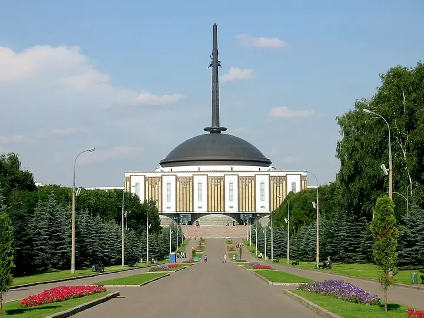

Фото: Jrissman, CC BY 3.0 · Wikimedia Commons
Парк · ЗАО
Парк Победы
Мемориальный парк на Поклонной горе: монумент, фонтаны, выставка военной техники.
- ₽ · до 1 500 ₽ на человека
- в 2 планах
Позвать сюда: Парк ПобедыОткрыть в каталоге: Парк ПобедыМаршрут до места: Парк Победы
Адрес и детали
- Адрес
- пл. Победы, Поклонная гора
Открыть на Яндекс Картах (в новой вкладке) - Метро
- м. Парк Победы
- Округ
- Запад (ЗАО)
- Цена
- до 1 500 ₽ на человека
- Проверено
- работает — проверили в октябре 2026
Планы с этим местом 2
- Парк Победы · Парк · м. Парк Победы
- 5 минут пешкомColizeum Парк Победы · Компьютерный клуб
Прогулка по Парку Победы к монументу и выставке военной техники на закате, а через пять минут VIP-буткемп ровно на пятерых и три PS5.
Открыть план: Поклонка на закате и буткемпПозвать сюда: Поклонка на закате и буткемп
Фото: Jrissman, CC BY 3.0 · Wikimedia Commons
- Парк Победы · Парк · м. Парк Победы
- 14 минут пешкомМузей Победы · Музей
Парк Победы, выставка техники под открытым небом и большой музей войны.
Открыть план: Поклонная гораПозвать сюда: Поклонная гора
Фото: Jrissman, CC BY 3.0 · Wikimedia Commons

Похожие рядом


Что ещё рядом

Как позвать
- Выбери план, место или событие — в карточке адрес, цены и маршрут в Яндекс Картах.
- Нажми «Позвать сюда» — соберётся приглашение-игра для свидания или голосование для компании.
- Отправь ссылку в любой мессенджер: тебе ответят, а компания отметит, куда и когда может. Бесплатно и без регистрации.